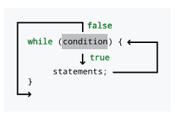
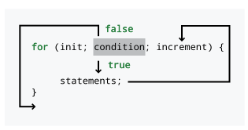

Capítulo 5. Repetição
Q-Tip: You on point, Phife?
Phife Dawg: All the time, Tip.
Q-Tip: You on point, Phife?
Phife Dawg: All the time, Tip.
Q-Tip: You on point, Phife?
Phife Dawg: All the time, Tip.
Q-Tip: Well, then grab the microphone and let your words rip.
5.1. Problema: Pesquisa de DNA
O mundo da bioinformática é a interseção entre a biologia e a ciência da computação. O sequenciamento de genomas, a determinação da função de genes específicos, a análise e a previsão de estruturas proteicas e a imagem biomédica são apenas algumas das áreas abrangidas pela bioinformática. Muitas pesquisas fascinantes estão sendo realizadas nessa área, à medida que os biólogos se tornam melhores programadores e os cientistas da computação aplicam suas técnicas à biologia.
Devido à sua importância fundamental e à incrível quantidade de informações envolvidas, com dezenas ou centenas de milhões de pares de bases de DNA em cada cromossomo humano, o DNA é o foco central da bioinformática. Como você deve saber, uma fita de DNA é composta por uma sequência de quatro bases nucleotídicas: adenina, citosina, guanina e timina. Essas bases são geralmente abreviadas como A, C, G e T, respectivamente.
Buscar uma subseqüência específica de DNA dentro de uma sequência maior é uma tarefa comum para os biólogos. Seu objetivo é escrever um programa que busque uma subseqüência e informe quantas vezes ela foi encontrada na sequência. Por exemplo, se você receber a sequência ATTAGACCATATA e for solicitado a buscar CAT, seu programa deve retornar 1, já que há exatamente 1 ocorrência de CAT em ATTAGACCATATA. Uma característica deste problema que o torna mais interessante é que as ocorrências podem se sobrepor. Por exemplo, dada a sequência TATTATTAGATTA e solicitado a procurar por TATTA, a resposta correta é 2. A sequência começa com um TATTA, mas o terceiro T na sequência também é o primeiro T em uma segunda instância de TATTA.
Em Capítulo 4, você aprendeu ferramentas que permitem fazer comparações e escolhas com base nos resultados. Essas ferramentas se tornarão ainda mais úteis. Por exemplo, quando você se depara com um char em uma sequência, você sabe como compará-lo a um char na subseqüência que está procurando. As ferramentas que você ainda não possui são aquelas que permitem a repetição. Como este problema exige que o programa processe uma sequência de DNA de comprimento arbitrário, precisaremos de alguma maneira de realizar uma ação repetidamente.
5.2. Conceitos: Repetição
Você já sabe como incluir opções em um programa Java, mas, até agora, cada opção só pode ser escolhida uma vez. Portanto, se quiser que o computador faça muitas coisas, você precisa digitar muitas coisas. Uma das grandes desvantagens dos computadores é que eles não têm inteligência: podem seguir instruções cegamente, mas não conseguem fazer mais nada. Uma das grandes vantagens dos computadores é que eles são rápidos. Os computadores modernos podem realizar operações matemáticas bilhões de vezes mais rápido do que os seres humanos. Para aproveitar essa velocidade, precisamos dar aos computadores instruções para realizar tarefas repetidamente. Para ser útil, essa instrução deve ter dois componentes: deve ter uma maneira de alterar ligeiramente a tarefa a cada vez, de modo que cada tarefa realize algo diferente. Também deve ter uma maneira de decidir quando parar; caso contrário, continuará para sempre.
O primeiro componente é o mais sutil. Criar um conjunto de instruções para que cada repetição da tarefa seja apropriada será diferente para cada problema. O segundo componente é mais fácil de descrever: vamos nos basear na lógica booleana, assim como fizemos para as instruções condicionais. A principal ferramenta para repetição em Java e em muitas outras linguagens é chamada de laço. O corpo de um laço contém a tarefa a ser executada. O restante do laço, no mínimo, contém uma condição. Toda vez que a tarefa especificada no corpo do laço for concluída, o computador verificará a condição. Se a condição for verdadeira, ele executará a tarefa novamente. Se a condição for falsa, o computador encerra o laço e pode passar para o código que vem a seguir.
Uma das dificuldades de programar um computador é que precisamos ser muito explícitos. Mesmo as tarefas mais óbvias devem ser descritas com detalhes meticulosos. Vamos considerar uma tarefa simples, uma que realizamos todos os dias. Se estivermos em uma sala e quisermos sair, simplesmente saímos pela porta mais próxima. Supondo que haja apenas uma porta na sala, como podemos descrever esse processo dividindo-o nas etapas que (literalmente) damos? Talvez pudéssemos dizer o seguinte.
Caminhe em direção à porta até chegar nela.
Essa instrução é um pouco mais específica do que Saia da sala, mas não se encaixa perfeitamente no paradigma de um laço, ou seja, uma tarefa claramente definida e uma condição. A seguinte opção é melhor.
Enquanto você não estiver na porta,
de um passo em direção a porta.
Agora temos uma boa separação entre o trabalho realizado e a condição para a repetição. Qual é a tarefa executada no corpo desse laço e qual é a condição? A tarefa é dar um passo em direção à porta. A condição é não estar na porta. Parece um pouco estranho incluir esse “não”, mas, na nossa definição de laços, o corpo é executado enquanto a condição for verdadeira.
Em um laço, chamamos cada execução do corpo do laço de iteração. Quando dizemos que um programa itera pelas instruções em um laço, estamos nos referindo a uma única passagem pelo corpo de um laço. Nesse caso, o laço irá iterar quantas vezes forem necessárias, dependendo do número de passos até a porta a partir da posição inicial. É até possível que o laço itere zero vezes: A pessoa que seguir este conjunto de instruções talvez já esteja na porta!
É difícil escapar dos números em um programa de computador, especialmente porque tudo é fundamentalmente armazenado como números dentro de um computador. Portanto, o tipo mais comum de laço é aquele que itera um número fixo de vezes. Por exemplo, sua rotina de exercícios matinais pode incluir pular corda 100 vezes. Poderíamos formular um laço para fazer isso da seguinte maneira.
Zere o seu contador.
Enquanto o seu contador for menor que 100,
pule corda.
Aumente o seu contador em 1.
Este laço requer uma configuração inicial para que o contador comece com o valor correto. Em seguida, o trabalho realizado pelo laço consiste no próprio ato de pular corda e no incremento do contador. A condição é que o contador seja menor que 100. Observe que se trata estritamente de um valor menor que 100. Após o primeiro salto, o contador será incrementado para 1. Após o 100º salto, o contador será incrementado para 100. Como 100 não é menor que 100, o laço será encerrado. Se a condição fosse o contador ser menor ou igual a 100, a pessoa seguindo as instruções saltaria 101 vezes.
A entrada também pode ser um fator nas repetições do laço. Por exemplo, você pode ser um soldado em treinamento no Corpo de Fuzileiros Navais dos EUA. Talvez seu sargento instrutor tenha ordenado que você faça flexões até que ele diga que você pode parar. Poderíamos formular um laço para fazer isso da seguinte maneira.
Faça:
Flexão.
Pergunte ao sargento se você pode parar.
Enquanto a resposta for `não`
Assim como acontece com a entrada do usuário, muitas vezes é necessário entrar no ciclo pelo menos uma vez para obter a entrada. Esse ciclo exige que o soldado faça pelo menos uma flexão antes de pedir para parar. Alguns sistemas podem usar entradas, mas apresentam outras restrições. Uma versão mais realista desse ciclo poderia ser a seguinte. following.
Faça:
Flexão.
Pergunte ao sargento se você pode parar.
Enquanto a resposta for não e você não tiver colapsado.
Lembre-se de que a condição de um laço deve ser um valor booleano, e o laço é executado enquanto a condição for verdadeira. No entanto, não há motivo para que o valor booleano não possa ser uma expressão complexa, utilizando toda a lógica booleana que conhecemos e apreciamos.
Também é possível aninhar laços. Aninhar laços significa colocar um laço dentro de outro, de forma semelhante à maneira como instruções condicionais podem ser aninhadas dentro de outras instruções condicionais. Assim como qualquer outra instrução, um laço interno será executado tantas vezes quantas o laço externo for executado. É claro que as instruções dentro do laço interno serão executadas de acordo com as condições desse laço. Portanto, se um laço externo for executado 10 vezes e um laço interno for executado 50 vezes, uma instrução no corpo de um laço interno seria executada 500 vezes!
Por exemplo, se você estiver malhando, pode fazer várias séries de supino com um número fixo de repetições em cada série. Se você fizesse 3 séries de 15 repetições de supino cada, seu programa de treino poderia ficar assim:
Defina o contador de séries para 0.
Enquanto o contador de séries estiver menor que 3,
defina o contador de repetições para 0.
Enquanto o contador de repetições estiver menor que 15,
faça um supino.
Aumente o contador de repetições em 1.
Descanse por 2 minutos.
Aumente o contador de séries.
Essa forma de descrever o programa de treino parece um pouco entediante. A maior parte da descrição é estrutural: condições para os laços e incrementos para os contadores. As únicas atividades "reais" são o supino e o descanso. Como você pode ver, o supino está dentro do laço de repetições interno e será executado 15 vezes a cada execução completa desse laço. Como o laço de repetições interno está dentro do laço de séries externo, ele será executado 3 vezes, resultando em um total de 45 supinos. O descanso, no entanto, vem após o laço de repetições interno, mas ainda está contido no laço de séries externo e será executado 3 vezes, totalizando 6 minutos de descanso.
Assim como nas condições, escrever laços em inglês é tedioso e impreciso. Na próxima seção, discutiremos as ferramentas para escrever laços em Java. Como o Java foi projetado tendo os laços como ferramenta central, podemos escrevê-los de forma mais sucinta do que em inglês, concentrando muitas informações em um espaço reduzido. Por contermos tanta informação neles, os laços podem parecer intimidadores à primeira vista. Lembre-se de que a sintaxe que apresentaremos é apenas a maneira formal do Java de expressar uma condição e uma lista de instruções a serem executadas repetidamente.
5.3. Sintaxe: Laços no Java
A linguagem de programação Java contém três tipos de laços com nomes diferentes: laços while, laços for e laços do-while. Todos eles permitem escrever código que será executado repetidamente. Na verdade, qualquer programa que utilize um tipo de laço para resolver um problema poderia ser adaptado para usar qualquer um dos outros dois tipos. Os três tipos são fornecidos em Java, em parte para facilitar a codificação de certas formas típicas de repetição e, em parte, porque a linguagem C, antecessora do Java, os continha. Começaremos descrevendo os laços while, pois eles têm a forma mais simples, e depois passaremos para os outros dois tipos. Em seguida, explicaremos a sintaxe para aninhar vários laços e, finalmente, discutiremos várias das armadilhas comuns encontradas pelos programadores ao codificar laços.
5.3.1. Laços while
À primeira vista, a sintaxe de um laço while se assemelha a uma instrução if. Ela começa com a palavra-chave while, seguida por uma condição booleana entre parênteses e, em seguida, por um bloco de código entre chaves ({ }). Essa semelhança não é por acaso. A diferença entre os dois é que o corpo da instrução if será executado apenas uma vez, enquanto o corpo do laço while será executado enquanto a condição permanecer true. Figura 5.1 mostra o padrão de execução dos laços while.

true, todas as instruções no corpo do laço são executadas e, em seguida, a condição é verificada novamente. Quando a condição é false, a execução ignora o corpo do laço.Se considerarmos que o valor booleano naPorta indica se chegamos ou não à porta e que o método andeAteAPorta() nos permite dar um passo em direção à porta, poderíamos reformular nosso exemplo do início da seção anterior da seguinte maneira.
while (!naPorta) {
naPorta = andeAteAPorta();
}Aqui, partimos do princípio de que o método andeAteAPorta() retorna um valor boolean que é true se tivermos chegado à porta e false caso contrário. A menos que o método andeAteAPorta() seja capaz de alterar o valor de naPorta, o laço se repetirá indefinidamente, um fenômeno conhecido como laço infinito.
while (true) {
System.out.println("Me ajude!");
}Este código apresenta um exemplo de um laço infinito. Se você executar este código dentro de um programa, ele exibirá uma sucessão interminável de mensagens "Me ajude!". Esteja preparado para interromper o programa digitando "Ctrl+C" (mantenha pressionada a tecla "Control" e pressione "C"), pois, de outra forma, ele não terminará. Nem todos os laços infinitos são tão óbvios assim. Um programador não usaria true como condição de um laço, mas fazer isso nem sempre é errado. Espera-se que alguns laços continuem por um bom tempo sem um fim definido. Para sair de um laço abruptamente, você pode usar o comando break. Observe que o comando break existe em muitas linguagens, mas deve ser usado raramente, se é que deve ser usado, para sair de um laço.
while (true) {
System.out.println("Me ajude!");
break;
}Este laço exibirá apenas uma vez "Me ajude!" antes de encerrar. É possível usar um comando break junto com uma instrução if para criar um laço que se repita mais de uma vez.
int contador = 0;
while (true) {
System.out.print("o laço ");
++contador;
if (contador >= 3) {
break;
}
}
System.out.println("Está pegando fogo!");Este laço exibirá o laço o laço o laço está pegando fogo!. É claro que a instrução break complica desnecessariamente o código. Poderíamos ter escrito um código equivalente da seguinte forma.
int contador = 0;
while (contador < 3) {
System.out.print("o laço ");
++contador;
}
System.out.println("está pegando fogo!");Agora, vamos passar para um exemplo mais complexo, capaz de imprimir a representação binária de um número.
Conforme discutimos em Capítulo 1, os números binários são os blocos de construção de todos os dados contidos na memória de um computador moderno. Os números inteiros são armazenados em binário. A representação de números de ponto flutuante é mais complicada, mas também usa 1s e 0s. Até mesmo o tipo de dados char e os valores String construídos a partir deles são fundamentalmente armazenados como números binários. Por esse motivo, os cientistas da computação tendem a estar familiarizados com o sistema numérico de base 2 e com a forma de converter entre ele e a base 10, nosso sistema numérico habitual.
Na base 10, o número 379 é igual a 3 · 100 + 7 · 10 + 9 · 1 = 3 · 102 + 7 · 101 + 9 · 100. Movendo-se da direita para a esquerda, o valor de cada posição aumenta por um fator de 10. Um número binário é igual, exceto que o aumento é por um fator de 2 e nenhum dígito é maior que 1. Assim, o número 1010112 = 1 · 25 + 0 · 24 + 1 · 23 + 0 · 22 + 1 · 2 + 1 · 20 = 1 · 32 + 0 · 16 + 1 · 8 + 0 · 4 + 1 · 2 + 1 · 0 = 43. Em binário, o número 379 = 1011110112.
Para converter um número n para binário, primeiro encontramos a maior potência de 2 que não seja maior que n. Em seguida, iniciamos um processo repetitivo que termina quando a potência de 2 em questão é 0. Se 2 elevado à potência atual for maior que n, imprimimos um 0, pois essa potência é grande demais para n. Caso contrário, imprimimos um 1, subtraímos 2 elevado a essa potência de n e passamos para a próxima potência de 2 menor. Esse processo imprimirá um 0 para cada potência de 2 que não esteja em n e um 1 para cada uma que esteja, fornecendo exatamente a definição de um número escrito na base 2.
import java.util.*;
public class DecimalToBinary {
public static void main(String[] args) {
Scanner in = new Scanner(System.in);
System.out.print("Please enter a base 10 number: ");
int number = in.nextInt();
int power = 1;
while (power <= number/2) {
power *= 2;
}
while (power > 0) {
if (power > number) {
System.out.print(0);
} else {
System.out.print(1);
number -= power;
}
power /= 2;
}
}
}O primeiro laço while neste programa dobra o valor de power até que dobrá-lo novamente o tornaria maior que number. Subimos até number/2, inclusive; caso contrário, pararíamos quando power fosse maior que number. Após esse laço, começamos a verificar repetidamente se uma determinada potência de 2 é maior que o valor restante em number. Se for, sabemos que não devemos usar essa potência. Se não for, usamos e devemos remover essa potência do valor de number.
Você pode ter ficado tentado a resolver este problema determinando se um determinado número é par ou ímpar. Se for par, você registra um 0, e se for ímpar, registra um 1. Você poderia então dividir o número por dois e repetir o processo de determinar se ele é par ou ímpar. Você continuaria esse processo até que o número se tornasse 0. Esse procedimento requer apenas um único laço while e forneceria os dígitos do número na base 2. Infelizmente, você obteria os dígitos na ordem inversa. Como escrevemos nossos números com o dígito mais significativo à esquerda, tivemos que usar o código fornecido acima para primeiro encontrar o maior valor e trabalhar de trás para frente, a fim de determinar os dígitos binários na sequência correta.
5.3.2. Laços for
Agora vamos voltar ao nosso código que retorna o laço o laço o laço está pegando fogo!
int contador = 0;
while (contador < 3) {
System.out.print("o laço ");
++contador;
}
System.out.println("está pegando fogo!");Este código envolve uma inicialização, uma condição e uma atualização, como
ocorre em muitos laços. A inicialização define contador como 0, a condição
verifica se contador é menor que 3, e a atualização
incrementa contador em 1 a cada iteração do laço. Esses três
elementos são tão comuns que um tipo especial de laço chamado laço for
foi projetado tendo-os explicitamente em mente. A maioria dos laços for
depende de uma única variável de contagem. Para tornar o laço fácil de ler,
a inicialização, a condição e a atualização, todas relacionadas a essa
variável, são colocadas no cabeçalho do laço. Poderíamos codificar o
exemplo anterior do laço while de forma mais clara, usando um laço for, como
segue.
for (int i = 0; i < 3; ++i) {
System.out.print("o laço ");
}
System.out.println("está pegando fogo!");O cabeçalho de um laço for é composto por três partes: a
inicialização, a condição e a atualização, todas separadas por
ponto-e-vírgula. A Figura 5.2 mostra o padrão de execução dos
laços for.

verdadeira, todas as instruções no corpo do laço são executadas, seguidas pela etapa de incremento. Em seguida, a condição é verificada novamente. Quando a verificação é falsa, a execução ignora o corpo do laço.Você deve ter notado que mudamos o nome da variável usada dentro
do laço de contador para i. Isso não altera a função do
código. Fizemos isso porque usar as variáveis i, j e, às vezes,
k é uma prática muito comum em laços for. Ao usar variáveis com nomes
como esses, estamos indicando que a variável é apenas um contador fictício
que estamos usando para fazer o laço funcionar, e não uma variável com um
propósito mais abrangente. Além disso, com três utilizações de uma única variável no
cabeçalho de um laço for, um nome de variável longo ocupa muito espaço.
Os laços for são mais utilizados em programas Java do que os outros dois tipos de laço.
Eles funcionam bem quando você sabe quantas vezes deseja iterar pelo
laço, o que geralmente é o caso. Você pode pensar na primeira parte do
cabeçalho do laço for como o ponto de partida, na segunda parte como o ponto de
chegada e na terceira parte como a forma de ir do início ao fim. Muitos
programadores iniciantes ficam presos à ideia de que todo laço for começa
com int i = 0 e termina com ++i. Embora esse padrão seja frequentemente verdadeiro,
há muitas outras maneiras de usar um laço for. Por exemplo, poderíamos imprimir
as potências de 2 menores que 1000.
for (int i = 1; i < 1000; i *= 2) {
System.out.println(i);
}Este trecho de código exibe 1, 2, 4, 8, 16, 32, 64,
128, 256 e 512 em linhas separadas, que são as potências de
2, de 2^0 até 2^9.
Ambos os exemplos de laços for que
apresentamos tinham apenas uma única linha executável no corpo do
laço. Assim como as instruções if, os laços só exigem chaves se seus corpos
tiverem mais de uma linha executável. Muitos dos laços while da
subseção anterior poderiam ter sido escritos sem chaves.
O fato de um laço for já possuir um mecanismo de contagem não significa
que não precisaremos de outras variáveis para realizar tarefas úteis. Por
exemplo, dada uma String, poderíamos tentar encontrar a letra do
alfabeto na String que está mais próxima do final do alfabeto.
Para a String "Pluto não é mais um planeta", a última letra do
alfabeto a aparecer é ‘u’. Para escrever código que faça esse trabalho, devemos usar
a variável de contagem do laço for como um índice na
String. Então, também precisamos de uma variável temporária onde guardemos a
última letra encontrada até o momento. Para obter o iésimo char de uma
String, podemos usar o método charAt(). Lembre-se de que o índice do primeiro
char em uma String é 0, e o índice do último char é um a menos
que o comprimento da String.
String s = "A raposa marrom ágil salta por cima do cão preguiçoso.";
String minusculo = s.toLowerCase();
char ultimo= ' ';
char c;
for (int i = 0; i < minusculo.length(); ++i) {
c = minusculo.charAt(i);
if (c >= 'a' && c <= 'z' && c > ultimo) {
ultimo= c;
}
}
System.out.println("O último caractere do alfabeto da sua mensagem é: '"
+ ultimo + "'.");A primeira coisa que fazemos neste exemplo é converter s para minúsculas, de modo
que estejamos comparando todos os valores char no mesmo formato. Em seguida, percorremos
minusculo, começando no índice 0 e avançando até chegarmos ao fim da
String. Para cada char, verificamos se é um caractere alfabético
e, em seguida, se está mais à direita no alfabeto do que o nosso atual
ultimo.
Se for, armazenamos em ultimo. Após o laço, imprimimos
o valor em ultimo. Escolhemos o char ‘ ’ porque ele é
numericamente anterior a todas as letras do alfabeto. Se a saída
for um espaço, saberemos que nenhum dos caracteres em s era
alfabético.
Para o exemplo dado, o último caractere do alfabeto é 'u'
devido à palavra "preguiçoso". Uma fraqueza desse código é que ele
sempre vasculhará toda a String, mesmo que a letra 'u' já tenha
sido encontrada. Para a String
"A raposa marrom ágil salta por cima do cão preguiçoso.", não estamos perdendo muito
tempo. No entanto, se a String fosse "Zanzibar!" seguida pelo
texto completo de Guerra e Paz, estaríamos desperdiçando milhares e
milhares de operações lendo caracteres quando sabíamos que 'z'
seria a última letra, não importa o que acontecesse. Podemos reescrever nosso
laço for para que ele termine mais cedo se chegar a um 'z'.
for (int i = 0; i < minusculo.length(); ++i) {
c = minusculo.charAt(i);
if (c >= 'a' && c <= 'z' && c > ultimo) {
ultimo = c;
}
if (ultimo == 'z') {
break;
}
}Esta versão do laço for sairá imediatamente se o último
já for um ‘z’. Este código funcionará de forma eficiente, mas muitos
programadores profissionais desaconselham o uso de break, exceto quando
for absolutamente necessário (como em uma instrução switch). Se um break for
usado para sair do laço, essa lógica pode ser codificada na condição do
laço. Assim, o mesmo laço escrito com um estilo melhor seria o
seguinte.
for (int i = 0; i < minusculo.length() && ultimo != 'z'; ++i) {
c = minusculo.charAt(i);
if (c >= 'a' && c <= 'z' && c > ultimo) {
ultimo = c;
}
}Nesta versão final do laço, tornamos a parte condicional
do cabeçalho mais complexa. A comparação usando < retorna um valor booleano
que combinamos usando && com o valor booleano da comparação
que usa !=. Como sempre, lembre-se de que o ciclo continuará iterando enquanto
a condição for true. Como precisamos que ambas as partes da
condição sejam true para continuar a execução, usamos o operador &&
para conectá-las.
Pedimos desculpas aos leitores internacionais por nos concentrarmos no alfabeto latino
usado pelo inglês e por muitas outras línguas da Europa Ocidental. Deve ser
possível criar uma versão localizada deste exemplo com qualquer alfabeto
verificando o valor de retorno de Character.isLetter(c), que é válido
para todos os valores Unicode de caractere único, embora a ideia de
ordem alfabética não se aplique realmente a alguns sistemas de caracteres, como
os hanzi e kanji do chinês e do japonês. Independentemente disso, o uso do método
Character.isLetter() é recomendado para quase todas as
aplicações, uma vez que é mais geral e mais legível.
Números primos são números inteiros maiores que 1 cujos únicos divisores são 1 e eles mesmos. Se você já se deparou com números primos antes, eles provavelmente pareceram uma curiosidade matemática e nada mais. Na verdade, os números primos são a base de uma aplicação muito prática da matemática: a criptografia. Com o uso de um pouco de matemática e de números primos muito grandes, os cientistas da computação desenvolveram técnicas que tornam as mensagens enviadas pela Internet mais seguras.
Essas técnicas estão além do escopo deste livro, mas podemos pelo menos escrever algum código para determinar se um número n é primo. Para isso , basta dividir n por todos os números entre 2 e n - 1. Se nenhum desses números o dividir sem sobras, ele deve ser primo. Aqui está essa solução básica.
import java.util.*;
public class PrimalityTester0 {
public static void main(String[] args) {
Scanner in = new Scanner(System.in);
System.out.print("Please enter a number: ");
long number = in.nextLong();
boolean prime = true;
for (long i = 2; i < number && prime; ++i) {
if (number % i == 0) {
prime = false;
}
}
if (prime) {
System.out.println(number + " is prime.");
} else {
System.out.println(number + " is not prime.");
}
}
}Este programa possui um laço for que vai de 2 até número - 1,
desde que não encontremos um número que divida número por inteiro. Essa
otimização significa que o programa exibirá o resultado assim que souber
que o número não é primo, mas teremos que esperar que ele
verifique todas as outras possibilidades antes de ter certeza de que o número é
primo.
Uma observação que podemos usar para tornar o programa mais eficiente é que, depois de verificar 2, não precisamos dividi-lo por nenhum número par. Portanto, podemos fazer metade da verificação com algumas modificações simples.
import java.util.*;
public class PrimalityTester1 {
public static void main(String[] args) {
Scanner in = new Scanner(System.in);
System.out.print("Please enter a number: ");
long number = in.nextLong();
boolean prime = number == 2 || number % 2 != 0;
for (long i = 3; i < number && prime; i += 2) {
if (number % i == 0) {
prime = false;
}
}
if (prime) {
System.out.println(number + " is prime.");
} else {
System.out.println(number + " is not prime.");
}
}
}Esta versão do programa define a variável boolean prime como
false se number for divisível por 2 (a menos que seja o próprio 2) e como true caso contrário. Em seguida,
inicia a busca em 3 e continua em incrementos de 2. Embora economizemos metade das verificações,
podemos fazer muito melhor. Observe que, se um número n é divisível por 2, então também é divisível por
n/2. Portanto, se um número não é divisível por 2, também não é divisível por nenhum
número maior que n/2. Se não for divisível por 2 ou 3, então também não é divisível por nenhum número
maior que n/3. Se não for divisível por 2 ou 3
ou 4, não é divisível por nenhum número maior que
n/4, e assim por diante. Assim, não precisamos verificar todos
os números até n - 1. Se estivermos verificando se
n é divisível por x e descobrirmos que
n não é divisível por nenhum número maior que
n/x, o ponto em que x = n/x
é o seguinte.

Assim, precisamos pesquisar apenas até a raiz quadrada de n, o que economizará muito mais tempo.
import java.util.*;
public class PrimalityTester2 {
public static void main(String[] args) {
Scanner in = new Scanner(System.in);
System.out.print("Please enter a number: ");
long number = in.nextLong();
boolean prime = number == 2 || number % 2 != 0;
long root = (long)Math.sqrt(number);
for (long i = 3; i <= root && prime; i += 2) {
if (number % i == 0) {
prime = false;
}
}
if (prime) {
System.out.println(number + " is prime.");
} else {
System.out.println(number + " is not prime.");
}
}
}Observe que, nesta versão do programa, vamos até raiz, inclusive,
pois existe a possibilidade de que numero seja um quadrado perfeito.
O DNA é geralmente de fita dupla, com cada base emparelhada com outra base específica, chamada de base complementar. A tabela a seguir mostra a relação entre cada base e sua base complementar.
| Base | Abreviação | Base complementar |
|---|---|---|
Adenina |
A |
T |
Citosina |
C |
G |
Guanina |
G |
C |
Timina |
T |
A |
Uma tarefa simples, mas comum, é encontrar o complemento reverso de uma sequência de DNA . O complemento reverso de uma sequência de DNA é a sequência de bases complementares apresentada na ordem inversa. Por exemplo, o complemento reverso de ACATGAG é CTCATGT. Essa sequência é obtida primeiro encontrando o complemento de ACATGAG, que é TGTACTC, e depois invertendo sua ordem.
Vamos escrever um programa que encontre o complemento reverso de uma sequência de DNA
inserida por um usuário. Essa sequência será inserida como uma sequência
de caracteres composta pelas quatro abreviações das bases: A, C, G
e T. Vamos armazenar essa sequência como uma String e realizar algumas
manipulações nela para obter o complemento reverso.
import java.util.*;
public class ReverseComplement {
public static void main(String[] args) {
Scanner in = new Scanner(System.in);
System.out.print("Please enter a DNA sequence: ");
String sequence = in.next().toUpperCase();
String complement = "";
for (int i = 0; i < sequence.length(); ++i) { (1)
switch (sequence.charAt(i)) { // Get complements
case 'A': complement += "T"; break;
case 'C': complement += "G"; break;
case 'G': complement += "C"; break;
case 'T': complement += "A"; break;
}
}
String reverseComplement = "";
// Reverse the complement
for (int i = complement.length() - 1; i >= 0; --i) { (2)
reverseComplement += complement.charAt(i);
}
System.out.println("Reverse complement: " + reverseComplement);
}
}| 1 | Este exemplo cria primeiro uma String preenchida com o complemento dos
pares de bases da String de entrada. |
| 2 | Em seguida, cria uma nova String que é o inverso da sequência
complementar. |
Observe como
complement é criada anexando o char correspondente à
base complementar no final de complement. Se inseríssemos cada
char no início de complement, não precisaríamos inverter em
uma etapa separada.
import java.util.*;
public class CleverReverseComplement {
public static void main(String[] args) {
Scanner in = new Scanner(System.in);
System.out.print("Please enter a DNA sequence: ");
String sequence = in.next().toUpperCase();
String reverseComplement = "";
for (int i = 0; i < sequence.length(); ++i) {
switch (sequence.charAt(i)) { // Get complements
case 'A': reverseComplement = "T" + reverseComplement; break;
case 'C': reverseComplement = "G" + reverseComplement; break;
case 'G': reverseComplement = "C" + reverseComplement; break;
case 'T': reverseComplement = "A" + reverseComplement; break;
}
}
System.out.println("Reverse complement: " + reverseComplement);
}
}Como os valores String são imutáveis, eles nunca podem ser alterados. Portanto, o operador +=
não altera a String; em vez disso, ele cria uma nova String com
as novas informações concatenadas a ela. Infelizmente, isso é ineficiente
se houver muitas concatenações repetidas. Sequências de DNA podem conter
bilhões de bases, e construir o complemento reverso de uma sequência tão
longa geraria bilhões de novos objetos String, sobrecarregando o gerenciamento de memória
. Em situações em que ocorre concatenação repetitiva de String, é
mais eficiente usar um objeto StringBuilder, que é semelhante a um String
mas mutável. Os objetos StringBuilder possuem um método append() que insere
dados no final da representação de texto atual. Eles também possuem um método insert()
que insere dados no índice especificado. Uma vez que o texto tenha sido construído,
chamar o método toString() no objeto StringBuilder retornará o
objeto String que contém o texto representado dentro do StringBuilder.
O código a seguir é uma versão do complemento reverso inteligente usando um
StringBuilder em vez da concatenação de String.
StringBuilder.import java.util.*;
public class StringBuilderReverseComplement {
public static void main(String[] args) {
Scanner in = new Scanner(System.in);
System.out.print("Please enter a DNA sequence: ");
String sequence = in.next().toUpperCase();
StringBuilder reverseComplement = new StringBuilder();
for (int i = 0; i < sequence.length(); ++i) {
switch (sequence.charAt(i)) { // Get complements
case 'A': reverseComplement.insert(0, "T"); break;
case 'C': reverseComplement.insert(0, "G"); break;
case 'G': reverseComplement.insert(0, "C"); break;
case 'T': reverseComplement.insert(0, "A"); break;
}
}
System.out.println("Reverse complement: " + reverseComplement.toString());
}
}Algumas IDEs solicitarão que você converta automaticamente a concatenação de String dentro
de um laço em código StringBuilder equivalente.
5.3.3. Laços do-while
Use esta regra prática para decidir que tipo de laço usar: se você
sabe quantas vezes deseja que o laço seja executado, use um laço for. Se
você não sabe quantas vezes deseja que ele seja executado, use um laço while
. É claro que essa regra não é infalível. No exemplo anterior, nós
usamos um laço for mesmo que ele parasse de ser executado assim que um ‘z’
fosse encontrado. No entanto, parece que cobrimos todas as
situações possíveis com laços while e for. Quando devemos usar
laços do-while? A resposta simples é: nunca.
Você nunca precisa usar um laço do-while. Com um pouco de esforço,
você poderia usar um único tipo de laço para todas as tarefas. A principal diferença entre
um laço do-while e um laço while comum é que um laço do-while
sempre será executado pelo menos uma vez. Nenhum dos outros dois laços oferece
essa garantia. A sintaxe de um laço do-while é um do no início de
um corpo de laço entre chaves, com um cabeçalho while normal no final,
incluindo uma condição entre parênteses, seguida por um ponto-e-vírgula.
Figura 5.3 mostra o padrão de execução dos laços do-while
.

false, a execução pula o corpo do laço. Um laço do-while tem a garantia de ser executado pelo menos uma vez.Podemos usar um laço do-while para imprimir os primeiros 10 quadrados perfeitos
da seguinte forma.
int x = 1;
do {
System.out.println(x*x);
++x;
} while (x <= 10);Este laço se comporta exatamente da mesma forma que o laço a seguir.
int x = 1;
while (x <= 10) {
System.out.println(x*x);
++x;
}O momento em que um laço do-while realmente se destaca é quando seu
programa funcionará incorretamente se o laço não for executado pelo menos uma vez.
Essa situação ocorre frequentemente com entradas, quando o laço deve ser executado pelo menos
uma vez antes de verificar a condição. Por exemplo, imagine que você queira
escrever um programa que escolha um número aleatório entre 1 e 100 e permita
que o usuário adivinhe qual é até acertar. Você precisa de um laço
porque é uma atividade repetitiva, mas precisa permitir que o usuário adivinhe
pelo menos uma vez para que você possa verificar se ele acertou. O
fragmento de programa a seguir faz exatamente isso.
Scanner in = new Scanner(System.in);
Random random = new Random();
int guess;
int number = random.nextInt(100) + 1;
do {
System.out.print("Qual é o seu palpite? ");
guess = in.nextInt();
} while (guess != number);
System.out.println("Você acertou! O número era " + number + ".");Você poderia executar a mesma função com um laço while , mas precisaria
obter a entrada do usuário antes do início do laço. Usar o
laço do-while é um pouco mais elegante.
5.3.4. Laços aninhados
Assim como é possível aninhar instruções if, também é possível aninhar laços dentro de outros
laços. No caso mais simples, você pode ter alguma atividade repetitiva que
precisa ser executada várias vezes. Por exemplo, quando você era
mais jovem, provavelmente teve que aprender as tabuadas. Para cada
número, uma tabuada fornecia o valor do produto desse
número por todos os números inteiros entre 1 e 12. Podemos escrever um código para imprimir
a tabuada de cada número de 1 a 10 simplesmente
repetindo o processo.
for (int number = 1; number <= 10; number++) {
for (int factor = 1; factor <= 12; factor++) {
System.out.println(number + " x " + factor +
" = " + number*factor);
}
System.out.println();
}O laço externo que incrementa number é executado 10 vezes. O laço interno
que incrementa factor será executado 12 vezes a cada iteração do laço externo
. Assim, o código no laço interno será executado um total de 120 vezes.
A cada 12 iterações, o laço interno irá parar, e uma linha em branco extra
será adicionada pelo método System.out.println() no laço externo.
A sequência composta por 1, 3, 6, 10, 15 e assim por diante é conhecida como números triangulares. O iésimo número triangular é a soma dos primeiros i inteiros. Eles são chamados de números triangulares porque podem ser representados como triângulos equiláteros de uma maneira muito natural, se você usar um número de pontos igual ao número.
Podemos usar laços aninhados para imprimir os primeiros n números triangulares, onde n é especificado pelo usuário.
import java.util.*;
public class TriangularNumbers {
public static void main(String[] args) {
Scanner in = new Scanner(System.in);
System.out.print("How many triangular numbers? ");
int n = in.nextInt();
int sum;
for (int i = 1; i <= n; ++i) {
sum = 0;
for (int j = 1; j <= i; ++j) {
sum += j;
}
System.out.println(sum);
}
}
}Como você pode ver, o laço externo percorre cada um dos n
números triangulares diferentes. Em seguida, o laço interno realiza a soma
necessária para calcular o número triangular dado. No entanto, produzir uma sequência de
números triangulares dessa maneira é ineficiente. Laços aninhados são uma maneira eficaz de resolver muitos problemas,
principalmente certos tipos de problemas que usam matrizes, mas podemos gerar
números triangulares usando apenas um único laço for. A ideia principal é
que podemos acompanhar o número triangular anterior e adicionar
i a ele, à medida que i aumenta.
import java.util.*;
public class CleverTriangularNumbers {
public static void main(String[] args) {
Scanner in = new Scanner(System.in);
System.out.print("How many triangular numbers? ");
int n = in.nextInt();
int triangular = 0;
for (int i = 1; i <= n; ++i) {
triangular += i;
System.out.println(triangular);
}
}
}Ao remover o laço interno for, a quantidade total de trabalho necessária é
consideravelmente reduzida.
5.3.5. Armadilhas comuns
Com grande poder vem grande responsabilidade. O poder de repetir coisas inúmeras vezes significa que também podemos repetir nossos erros inúmeras vezes. Muitos bugs clássicos ocorrem como resultado de erros lógicos ou tipográficos em laços. Listamos alguns dos mais comuns a seguir.
|
Armadilha: Laços infinitos
É possível criar um laço que nunca termina. Seu programa pode demorar muito tempo para terminar, mas se demorar muito mais do que você espera, um laço infinito pode ser o culpado. Laços infinitos podem ocorrer porque você se esquece de incluir uma instrução apropriada para avançar um contador. Presume-se que este código tenha a intenção de imprimir os primeiros 100 números inteiros,
mas não há código que aumente o valor de Seria de se esperar que este código imprimisse 20 linhas de saída. No entanto,
lembre-se de que |
|
Armadilha: laços quase infinitos
Muitos laços são realmente infinitos; outros demoram muito tempo. Por exemplo, se você pretendia executar um laço de 10 a 0, mas incrementou seu contador em vez de decrementá-lo, o estouro de memória significa que você acabará chegando a um número menor que 0, mas isso levará mais de 2 bilhões de incrementos em vez dos 10 decrementos esperados. Este laço irá desacelerar significativamente seu código. Todos ficarão tão cansados de esperar que podem acabar saindo do lançamento do foguete. É claro que outro problema com laços quase infinitos é que você está lidando com valores errados. Ninguém espera ouvir o número 2.147.483.647 em uma contagem regressiva. |
|
Armadilha: Erros de "fencepost"
Talvez os erros de laço mais comuns sejam os erros de poste de cerca, frequentemente conhecidos como erros off-by-one. O nome “fencepost” vem de um erro relacionado que alguém poderia cometer ao montar uma cerca. Imagine que você queira erguer uma cerca de arame de 10 metros de comprimento com um poste de suporte a cada metro; quantos postes você precisa? Na verdade, não fornecemos informações suficientes para responder à pergunta corretamente. Se sua cerca for construída em linha reta, você precisará de 11 postes para que haja um poste em cada extremidade. No entanto, se sua cerca for um recinto retangular , digamos, de 3 metros por 2 metros, você precisará apenas de 10 postes. Em laços, os erros de poste de cerca geralmente se devem à contagem baseada em zero. Um laço É claro que, às vezes, precisamos da contagem a partir de 1. Depois de se habituar à contagem a partir de zero, um programador pode criar o seguinte laço que itera incorretamente 9 vezes. A versão correta, que itera 10 vezes, está abaixo. Se você quiser iterar n vezes, comece em 0 e vá até
mas sem incluir n ou, alternativamente, comece em 1 e vá até e
incluindo n. Para manter a consistência dos cabeçalhos dos laços, alguns
programadores sempre começam em 0 e, em seguida, ajustam os valores dentro do
laço, imprimindo |
|
Armadilha: Laços ignorados
Um laço é executado enquanto sua condição for Por exemplo, podemos escrever um programa que somará qualquer número de valores positivos . Quando o usuário terminar de usar o somador, ele ou ela digita um número negativo. Esse número negativo, chamado de valor sentinela, diz ao programa para parar de executar o laço. Abaixo está uma implementação incorreta de tal programa. Este laço nunca será executado porque |
|
Armadilha: Pontos-e-vírgulas mal posicionados
A noção de uma instrução em Java costuma ser confusa na mente de programadores iniciantes. Um laço inteiro (com qualquer número de laços aninhados dentro dele) é considerado uma instrução. Uma instrução executável que termina com um ponto-e-vírgula também é uma instrução, mesmo quando essa instrução executável está vazia. Assim, o seguinte é um laço válido (mas infinito). Esse código deveria fazer uma contagem regressiva a partir de 100, assim como no jogo
esconde-esconde; no entanto, há um ponto-e-vírgula após a condição do
laço Esse erro é comum especialmente para quem é novo em laços e instruções condicionais
e tem o hábito de colocar ponto-e-vírgulas depois de tudo.
Um ponto-e-vírgula mal colocado nem sempre resulta em um laço infinito. Aqui
está a versão com laço Esta versão do código será executada de forma semelhante, exceto que a decrementação está
incorporada no cabeçalho do laço. Assim, o laço executará a instrução vazia
, mas também decrementará Existem alguns casos em que uma instrução vazia no corpo de um laço é útil, embora nunca seja necessária. Nos próximos capítulos, vamos apontar situações em que você pode querer usar uma instrução vazia dessa maneira. |
5.4. Solução: Pesquisa de DNA
A seguir, apresentamos uma solução para o problema de pesquisa de DNA proposto no
início da segunda metade deste capítulo. Nossa solução exibe
o índice dentro da sequência quando encontra uma correspondência com a
subsequência que está procurando. Em seguida, ela exibe o número total de
correspondências. Nosso código também faz verificação de erros para garantir que o usuário
insira apenas sequências de DNA válidas contendo as letras A, C, G e T.
Começamos nosso código com a instrução import padrão e a definição de classe
.
import java.util.*;
public class DNASearch {
public static void main(String[] args) {
Scanner in = new Scanner(System.in); (1)
String sequence, subsequence;
boolean valid; (2)
char c;| 1 | O método main() instancia um objeto Scanner e declara as duas
variáveis String de que precisaremos para armazenar as sequências de DNA. |
| 2 | O método
também declara um boolean e um char que usaremos para a verificação de entrada. |
do {
System.out.print("Enter the DNA sequence you wish to search in: "); (1)
sequence = in.next().toUpperCase(); (2)
valid = true;
for (int i = 0; i < sequence.length() && valid; ++i) { (3)
c = sequence.charAt(i);
if (c != 'A' && c != 'C' && c != 'G' && c != 'T') { (4)
System.out.println("Invalid DNA sequence!");
valid = false;
}
}
} while (!valid); (5)| 1 | Em seguida, o usuário é solicitado a inserir uma sequência de DNA para pesquisa. |
| 2 | Esta
String armazenada em sequence é convertida para maiúsculas, caso
o usuário não esteja sendo consistente. |
| 3 | O laço for interno neste código verifica cada char dentro de sequence. |
| 4 | Se algum char não for um
‘A’, ‘C’, ‘G’ ou ‘T’, então valid é definido como false. Como
resultado, o laço for é encerrado. Além disso, o laço do-while repete o
prompt e obtém uma nova String para sequence do usuário. |
| 5 | Este laço externo
do-while continua enquanto o usuário continuar inserindo sequências de DNA
inválidas. |
do {
System.out.print("Enter the subsequence you wish to search for: ");
subsequence = in.next().toUpperCase();
valid = true;
for (int i = 0; i < subsequence.length() && valid; ++i) {
c = subsequence.charAt(i);
if (c != 'A' && c != 'C' && c != 'G' && c != 'T') {
System.out.println("Invalid DNA sequence!");
valid = false;
}
}
} while (!valid);O código usado para inserir subsequence durante a verificação de erros é
praticamente idêntico ao código para inserir sequence.
int found = 0;
for (int i = 0; i < sequence.length() - subsequence.length() + 1; ++i) { (1)
for (int j = 0; j < subsequence.length(); ++j) { (2)
if (subsequence.charAt(j) != sequence.charAt(i + j)) { (3)
break;
}
if (j == subsequence.length() - 1) { // Matches (4)
System.out.println("Match found at index " + i);
++found;
}
}
}| 1 | O núcleo da pesquisa está nesses laços for aninhados.
O laço externo percorre todos os índices em sequence, até que
chegue a um índice que seja tarde demais para ser o início de uma nova subsequência
(já que a subsequência seria longa demais para caber). Isso ocorre
quando o valor de i é maior ou igual a
sequence.length() - subsequence.length() + 1. Pode ser necessário refletir um pouco
para verificar se essa condição está correta. Uma maneira de pensar sobre
esse problema é observar que, quando sequence e subsequence têm
o mesmo comprimento, você precisa verificar a partir do índice 0 de sequence
, mas não os índices posteriores. Além disso, se subsequence for um char mais longo
que sequence, nunca poderá haver uma correspondência. Nesse caso, o valor de
sequence.length() - subsequence.length() + 1 seria 0. Como 0
não é menor que 0, o laço for externo nunca seria executado. |
| 2 | O laço for interno percorre o comprimento de subsequence,
garantindo que cada char em sequence, começando no deslocamento apropriado,
corresponda exatamente a um char em subsequence. |
| 3 | Se, em qualquer ponto, os
dois valores char não corresponderem, o laço for interno será imediatamente
encerrado, usando o comando break. |
| 4 | Na última iteração do
laço for interno, quando j for um a menos que o comprimento de subsequence,
sabemos que toda a subsequence correspondeu a uma parte de sequence. Como
resultado, imprimimos o índice de sequence onde subsequence começou
e incrementamos o contador found. |
Se você conhece bem a classe String, pode usar o método indexOf()
para substituir o laço for interno. Deixamos essa abordagem como um exercício.
Por fim, imprimimos o número total de correspondências encontradas. Para
evitar uma saída estranha como 1 correspondência encontrada., usamos um if-else para
personalizar a saída com base no valor de found.
if (found == 1) {
System.out.println("One match found.");
} else {
System.out.println(found + " matches found.");
}
}
}As ideias necessárias para implementar corretamente a solução não são difíceis, mas detectar todos os erros de deslocamento de um e acertar todos os detalhes exige cuidado. Também há mais de uma maneira de codificar essa solução. Por exemplo, poderíamos ter escrito os laços aninhados que fazem a busca da seguinte forma.
int found = 0;
for (int i = 0; i < sequence.length() - subsequence.length() + 1; ++i) {
for (int j = 0; j < subsequence.length() &&
subsequence.charAt(j) == sequence.charAt(i + j); ++j) {
if (j == subsequence.length() - 1) { // Correspondências
System.out.println("Correspondência encontrada no índice " + i);
++found;
}
}
}Esse design é preferido por muitos, pois elimina o break. Ao usar
uma instrução vazia, é possível mover a verificação para ver se o
processo de correspondência foi concluído para fora do laço for interno.
int found = 0;
int j;
for (int i = 0; i < sequence.length() - subsequence.length() + 1; ++i) {
for (j = 0; j < subsequence.length() &&
subsequence.charAt(j) == sequence.charAt(i + j); ++j);
if (j == subsequence.length()) { // Correspondências
System.out.println("Correspondência encontrada no índice " + i);
++found;
}
}Nesse caso, observe que devemos declarar j fora do laço for
interno, já que ele será usado fora dele. Essa abordagem é mais eficiente
porque precisamos realizar a verificação apenas uma vez. Observe que a
condição da instrução if também mudou. Agora, sabemos que toda a
subsequência corresponde porque o laço foi executado até o fim. Se o laço
não tivesse sido executado até o fim, então j seria menor que
subsequence.length() e o laço deve ter terminado porque os dois
valores char não corresponderam. Embora seja mais eficiente, alguns programadores
evitariam essa abordagem porque ela usa uma sintaxe confusa na qual
o corpo do laço for é uma única instrução vazia seguida por um
ponto-e-vírgula. Da mesma forma, a lógica sobre sair do laço e a condição
da instrução if fica mais obscura.
5.5. Concorrência: Laços
Muitos programadores utilizam a concorrência para aumentar a velocidade, a fim de fazer com que seus programas sejam executados mais rapidamente. A maioria dos programas que são executados por um longo período utiliza laços para realizar tarefas repetitivas. Se esses laços estiverem realizando a mesma operação em muitos conjuntos de dados diferentes, podemos acelerar o processo ao dividir os dados e permitir que diferentes threads operem em seu próprio segmento dos dados. Dividir os dados dessa maneira é chamado de decomposição de domínio , o que nos permite alcançar o _paralelismo de dados. Esses tópicos são discutidos mais detalhadamente em Seção 14.3.
Executar tarefas repetitivas é um dos grandes pontos fortes dos computadores. Para a maioria dos programas que rodam por muito tempo, quantidades incríveis de cálculos estão sendo feitas dentro de laços (geralmente aninhados). A decomposição de domínios não funcionará para todos esses programas. Alguns não podem ser paralelizados de forma alguma, mas este livro trata de encontrar problemas que possam ter soluções paralelas e concorrentes.
Em concorrência.html, apresentaremos ferramentas para escrever um programa concorrente com diferentes threads de execução rodando exatamente ao mesmo tempo e potencialmente interagindo. Usando apenas o poder dos laços, você pode ver o paralelismo em ação agora.
Considere o problema de calcular a soma dos senos de um intervalo de números inteiros. Em sua essência, há um laço do início ao fim do intervalo.
for (int i = start; i <= end; ++i) {
sum += Math.sin(start);
}Se quisermos permitir que o usuário especifique o início e o fim e imprima a soma, precisamos criar um programa com um pouco de entrada e saída em torno desse laço.
import java.util.Scanner;
public class SumSines {
public static void main(String[] args) {
Scanner in = new Scanner(System.in);
System.out.print("Enter starting value: ");
int start = in.nextInt();
System.out.print("Enter ending value: ");
int end = in.nextInt();
double sum = 0;
for (int i = start; i <= end; ++i) {
sum += Math.sin(start);
}
System.out.println("Sum of sines: " + sum);
}
}Se você compilar e executar este programa com 1 como valor inicial e
100000000 como final, a resposta deve ser 1.7136493465700542. Cem
milhões de valores é uma quantidade enorme para calcular o seno. Dependendo da sua
máquina, essa tarefa deve levar entre 10 segundos e mais de um minuto. Tente
cronometrar o tempo que isso leva com a maior precisão possível.
Agora, abra um total de quatro janelas de terminal e navegue em todas elas até o
diretório que contém SumSines.class. Execute SumSines em cada uma delas. Para
o primeiro terminal, digite 1 como início e 25000000 como fim. Para
o segundo, digite 25000001 e 50000000. Para o terceiro, digite
50000001 e 75000000. Para o último, digite 75000000 e
100000000. Após a execução, você deverá obter, respectivamente,
1.4912473269134603, -0.6795491754132104, -0.2893142602684644 e
1.1912654553381272. Se você somar esses valores usando uma calculadora,
deverá obter 1.7136493465699127, que é quase exatamente a mesma resposta
que obtivemos antes. (Erros de arredondamento de ponto flutuante causam a ligeira
diferença.)
Se você tentar iniciá-los para fazer o cálculo mais ou menos ao mesmo tempo, pode tentar ver quanto tempo leva para todos eles concluírem. Demorou menos tempo do que antes? Se você tiver um processador de núcleo único, pode ter demorado o mesmo tempo ou mais. Se você tiver um processador de dois núcleos, deveria ter demorado menos tempo, e se você tiver um processador de quatro núcleos, ainda menos. Como estamos dividindo o problema em quatro partes, não esperamos ver nenhuma melhoria com mais de quatro núcleos.
A maioria dos sistemas operacionais oferece uma maneira gráfica de visualizar a carga em cada processador. Se você examinar o uso da CPU enquanto executa esses programas, deverá ver um pico quando os programas começarem e, em seguida, uma queda quando eles terminarem. Para múltiplos núcleos, como determinamos em qual núcleo queríamos que cada programa fosse executado? Não dissemos. Em geral, é difícil especificar em qual núcleo queremos executar um programa, processo ou thread. O SO faz o trabalho de agendamento e escolhe um processador livre quando precisa executar um programa. É até possível que programas e threads mudem de um núcleo para outro durante a execução, se o SO precisar equilibrar a carga de trabalho.
Este exemplo de seno é semelhante ao Exemplo 14.10 em Capítulo 14. Como você deve ter percebido, rodar quatro programas simultaneamente não é prático. Você precisa abrir várias janelas, digitar os pontos inicial e final com muito cuidado e combinar as respostas no final, já que seus programas não podem interagir diretamente entre si. Os recursos do Java facilitarão esse trabalho, permitindo que executemos mais de uma thread de execução por vez, sem a necessidade de executar vários programas manualmente.
5.6. Exercícios
Problemas conceituais
-
Se você tiver uma
Stringcontendo um texto longo e quiser contar o número de palavras no texto que começam com a letra‘m’, qual dos três tipos de laço você usaria e por quê? -
Em Exemplo 5.2, nossa última versão do testador de primalidade
PrimalityTester2calcula a raiz quadrada do número que está sendo testado. Em vez de calcular esse valor antes do laço, como o desempenho seria afetado se alterássemos o cabeçalho do laçoforpara o seguinte?for (long i = 3; i <= Math.sqrt(number) && prime; i += 2) -
Quantas sequências de DNA diferentes de comprimento n existem ?
-
Existem três erros diferentes no laço a seguir, destinado a imprimir os números de 1 a 10. Quais são eles?
for (int i = 1; i < 10; --i); { System.out.println(i); } -
Considere o código a seguir contendo laços
foraninhados.Scanner in = new Scanner(System.in); int n = in.nextInt(); int count = 0; for (int i = 1; i <= n; ++i) { for (int j = 1; j <= i; ++j) { ++count; } }Em termos do valor de
n, quantas vezescounté incrementado? Se isso não for imediatamente óbvio, acompanhe a execução do programa manualmente ou execute o código para vários valores diferentes dene tente detectar um padrão.
Exercício de Programação
-
Escreva um programa que converta números na base 10 em números na base 3. Se essa tarefa lhe parecer muito fácil, escreva um programa que converta números na base 10 para qualquer base no intervalo de 2 a 16. Dica: use as letras de A a Z, em ordem, para representar dígitos maiores que 9.
-
O maior divisor comum (MDC) de dois números inteiros é o maior número inteiro que divide ambos sem sobras. O MDC de quaisquer dois números inteiros positivos é, no mínimo, 1 e, no máximo, o menor dos dois números. Escreva um programa que solicite ao usuário dois valores
inte encontre o MDC deles. Embora existam métodos mais eficientes, você pode contar de qualquer um dos números. Se o contador dividir ambos os números sem sobras, esse é o MCD. É garantido que o contador os dividirá se chegar a 1. -
Na solução para o problema de busca de DNA apresentado em <<Solução: Pesquisa de DNA>`, usamos dois laços
forpara encontrar ocorrências de uma subsequência de DNA dentro de uma sequência maior -
Desenvolvedores profissionais de Java teriam usado um único laço
fore o métodoindexOf()na classeString. Uma versão desse método retorna o índice de uma substring dentro de um objetoString, começando a partir de um deslocamento específico, conforme mostrado abaixo.String text = "fun dysfunction"; String search = "fun"; System.out.println("Localização: " + text.indexOf(search, 4));Este código irá exibir
Localização: 7, já que a primeira ocorrência de"fun"a partir do índice4ou posterior começa no índice7. Se não houver mais ocorrências da substring além do índice inicial, o método retornará-1. Reescreva a solução para o problema de pesquisa de DNA, substituindo o laço interno de pesquisaforpelo métodoindexOf(). -
Escreva um programa que leia um número n de um usuário e em seguida imprima todas as sequências de DNA possíveis de comprimento n. Tenha cuidado para não fornecer um valor muito grande ao executar este programa. Dica: Represente a sequência como uma
String. Em cada iteração, concentre-se no últimocharnaString. Se for um‘A’, altere-o para um‘C’. Se for um‘C’, altere-o para um‘G’. Se for um‘G’, altere- o para um‘T’. Se for um‘T’, altere-o de volta para um‘A’, mas “carregue” o incremento para o próximochar, como um odômetro giratório. Você terá que projetar laços que possam lidar com carregamentos que se propagam por vários índices. -
Reimplemente a solução para o programa de busca de DNA apresentado em Seção 5.4 usando
JOptionPanepara gerar GUIs para entrada e saída.
Experimentos
-
Usando um laço
for, registre a simulação de Monty Hall de modo que você possa executá-la 100 vezes, sempre optando por trocar de porta. Mantenha um registro de quantas vezes você ganha. Altere seu código novamente para executar a simulação de Monty Hall mais 100 vezes, sempre optando por manter sua escolha inicial. Mais uma vez, mantenha um registro de quantas vezes você ganha. Compare os dois registros. Escolher trocar deve ter um desempenho aproximadamente duas vezes melhor do que manter sua escolha inicial. Aumente o número de iterações para 1.000 e depois para 10.000 vezes. O desempenho de trocar se aproxima do dobro do desempenho de não trocar? -
Escreva três laços
foraninhados, cada um dos quais executado 1.000 vezes. Incremente um contador no laçoformais interno. Se esse contador começar em 0, seu valor final deve ser 1.000.000.000. Cronometre quanto tempo seu programa leva para ser executado até o fim usando um cronômetro ou, se você estiver em um sistema Unix ou Linux, o comandotime. Sinta-se à vontade para aumentar e diminuir o número de vezes que cada laço é executado para ver o efeito no tempo. No entanto, se você aumentar demais os valores dos três laços, pode ser que tenha que esperar um bom tempo. -
Em Seção 5.3.5, um dos erros comuns em laços que discutimos é um laço quase infinito. Crie seu próprio laço quase infinito que vá de
10a0, incrementando em vez de decrementar. Cronometre a execução do seu programa. Ao contrário do nosso exemplo, não use uma instrução de saída, ou seu código levará muito tempo para ser executado. Quanto tempo a mais seu código levaria para ser executado se você usasse umlongem vez de umint? -
Em Exemplo 5.2, apresentamos três programas para testar se um número é primo. Execute cada um desses testadores de primos em um grande primo, como 982.451.653, e cronometre-os. Existe uma diferença significativa no tempo de execução de
PrimalityTester0ePrimalityTester1? E quanto aPrimalityTester1ePrimalityTester2? -
Em Exemplo 5.6, executamos quatro programas ao mesmo tempo para resolver um problema em paralelo. Use a mesma estrutura (combinada com seu conhecimento sobre números primos de Exemplo 5.2) para escrever um programa que possa verificar quantos números primos existem em um intervalo de inteiros especificado pelo usuário. Em seguida, use-o para encontrar o número total de números primos entre 2 e 500.000.000. Agora, execute duas cópias do programa, com uma começando em 2 e indo até 250.000.000 e a outra começando em 250.000.001 e indo até 500.000.000. Se você somar os números , obtém a mesma resposta? (Se não, há um bug no seu programa.) Agora, divida o trabalho em quatro partes. Quão mais rápido, se é que há diferença, é executar todos os quatro programas em vez de um? Uma das quatro partes é executada significativamente mais rápido ou mais lento do que as outras?